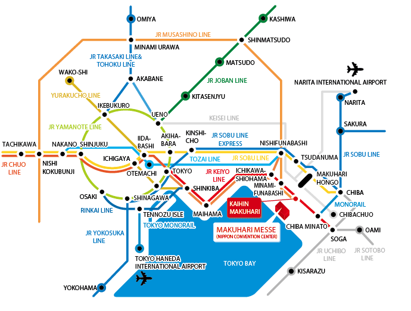

展場
幕張國際展覽中心（千葉市美濱區）
http://www.m-messe.co.jp/en/
搭電車

| JR京葉線 | 從「海濱幕張」站步行5分鐘（距離東京站29分鐘、蘇我站12分鐘） |
|---|---|
| JR總武線 | 從「幕張本鄉」站出發 * 搭乘往「千葉海洋球場」或「醫療中心」（週日、國定假日停駛）的巴士17分鐘，在【TOWN CENTER】下車步行3分鐘。 * 搭乘往「幕張國際展覽中心中央」的巴士17分鐘，在【幕張國際展覽中心中央】下車 |
高速總線
From/To Narita International Airport
Operated by Keisei Bus| Stopped at: | Narita Airport Terminal 1/ Terminal 2, Hotel Springs Makuhari, JR Kaihin Makuhari Station,Hotel New Otani Makuhari, Hotel Francs, Hotel The Manhattan, Hotel Green Tower Makuhari, APA Hotel & Resort TOKYO Bay Makuhari |
|---|---|
| Fare: | JPY1,100 for One-Way |
From/To Haneda International Airport
Operated by Keisei Bus| Stopped at: | Haneda Airport New International Terminal/ Terminal1/Terminal 2, Hotel New Otani Makuhari, Hotel Francs, Hotel The Manhattan, Hotel Green Tower Makuhari, APA Hotel & Resort, Hotel Spring Makuhari, JR Kaihin Makuhari Station, Makuhari Messe |
|---|---|
| Fare: | JPY1,120 for One-Way |
Operated by Airport Limousine
| Stopped at: | Haneda Airport New International Terminal/ Terminal1/Terminal 2, Hotel Springs Makuhari, JR Kaihin Makuhari Station, Hotel New Otani Makuhari, Hotel Francs, Hotel The Manhattan, Hotel Green Tower Makuhari, APA Hotel & Resort, Makuhari Messe |
|---|---|
| Fare: | JPY1,120 for One-Way |
Note: Fares and schedule are subject to change without notice.
自行開車
* 東關東自動車道：從灣岸習志野I.C或灣岸千葉I.C出發約5分鐘
* 京葉道路：從幕張IC出發約5分鐘
※幕張國際展覽中心停車場：5500個車位（一般小客車1,000日圓/日）
※停車場詳細資訊，請參照此頁面 http://www.m-messe.co.jp/en/access/access_car.html
※前往展場的詳細交通資訊，請參照此頁面 http://www.m-messe.co.jp/en/access/index.html
住宿
If you are looking for accommodations in Japan, JTB(Japan Travel Bureau)
will help you to find a place to stay. Please access to the following URL to find out best place to stay. JTB offers wide varieties of accommodations from near Makuhari Messe to downtown Tokyo.